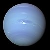

neptune

Definition: Neptune is the eighth planet from the Sun and the farthest known planet in the Solar System. It is the fourth-largest planet in the Solar System by diameter, the third-most-massive planet, and the densest giant planet. It is 17 times the mass of Earth, and slightly more massive than its near-twin Uranus. Neptune is denser and physically smaller than Uranus because its greater mass causes more gravitational compression of its atmosphere. Being composed primarily of gases and liquids, it has no well-defined solid surface. The planet orbits the Sun once every 164.8 years at an average distance of 30.1 astronomical units (4.5 billion kilometres; 2.8 billion miles). It is named after the Roman god of the sea and has the astronomical symbol , representing Neptune's trident.Neptune is not visible to the unaided eye and is the only planet in the Solar System found by mathematical prediction rather than by empirical observation. Unexpected changes in the orbit of Uranus led Alexis Bouvard to hypothesise that its orbit was subject to gravitational perturbation by an unknown planet. After Bouvard's death, the position of Neptune was predicted from his observations, independently, by John Couch Adams and Urbain Le Verrier. Neptune was subsequently observed with a telescope on 23 September 1846 by Johann Galle within a degree of the position predicted by Le Verrier. Its largest moon, Triton, was discovered shortly thereafter, though none of the planet's remaining 14 known moons were located telescopically until the 20th century. The planet's distance from Earth gives it a very small apparent size, making it challenging to study with Earth-based telescopes. Neptune was visited by Voyager 2, when it flew by the planet on 25 August 1989; Voyager 2 remains the only spacecraft to have visited Neptune. The advent of the Hubble Space Telescope and large ground-based telescopes with adaptive optics has recently allowed for additional detailed observations from afar.
Source: Wikipedia
Wikipedia Page
Wikidata Page
Occurs in: